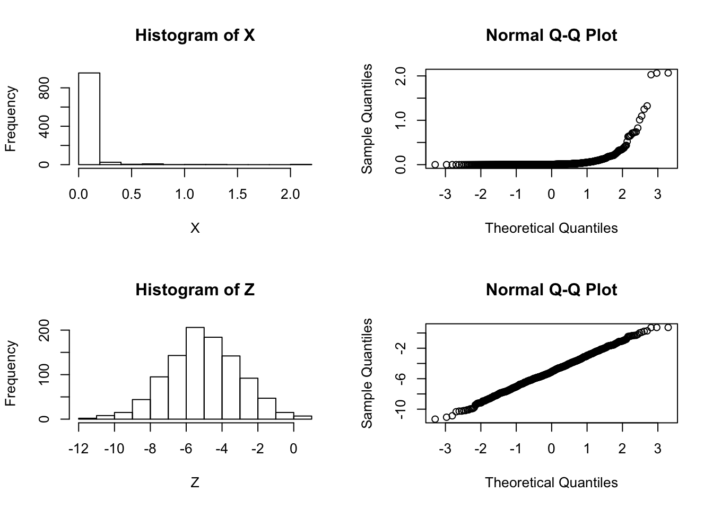

Last updated: 2016-09-04
Code version: 8e22ef642fbbce95f1d626f90689e8e91f655a92
Suppose that we are considering whether to model some data \(X\) as normal or log-normal. In this case we’ll assume the truth is that the data are log normal, which we can simulate as follows:
X = exp(rnorm(1000,-5,2))We will use \(Z\) to denote \(\log(X)\):
Z = log(X)And let’s check by graphing which looks more normal:
par(mfcol=c(2,2))
hist(X)
hist(Z)
qqnorm(X)
qqnorm(Z) So it is pretty clear that the model ``\(M_2: \log(X)\) is normal" is better than the model “\(M_1: X\) is normal”.
Now consider computing a “log-likelihood” for each model.
To compute a log-likelihood under the model “X is normal” we need to also specify a mean and variance (or standard deviation). We use the sample mean and variance here:
sum(dnorm(X, mean=mean(X), sd=sd(X),log=TRUE))[1] 426.1223Doing the same for \(Z\) we obtain:
sum(dnorm(Z, mean=mean(Z), sd=sd(Z),log=TRUE))[1] -2122.97Done this way the log-likelihood for \(M_1\) appears much larger than the log-likelihood for \(M_2\), contradicting both the graphical evidence and the way the data were simulated.
The explanation here is that it does not make sense to compare a likelihood for \(Z\) with a likelihood for \(X\) because even though \(Z\) and \(X\) are 1-1 mappings of one another (\(Z\) is determined by \(X\), and vice versa), they are formally not the same data. That is, it does not make sense to compute \[\text{"LLR"} := \log(p(X|M_1)/p(Z|M_2))\].
However, we could compute a log-likelihood ratio for this problem as \[\text{LLR} := log(p(X|M_1)/p(X|M_2)).\] Here we are using the fact that the model \(M_2\) for \(Z\) actually implies a model for \(X\): \(Z\) is normal if and only if \(X\) is log-normal. So a sensible LLR would be given by:
sum(dnorm(X, mean=mean(X), sd=sd(X),log=TRUE)) - sum(dlnorm(X, meanlog=mean(Z), sdlog=sd(Z),log=TRUE))[1] -2487.07The fact that the LLR is very negative supports the graphical evidence that \(M_2\) is a much better fitting model (and indeed, as we know – since we simulated the data – \(M_2\) is the true model).
sessionInfo()R version 3.3.1 (2016-06-21)
Platform: x86_64-apple-darwin13.4.0 (64-bit)
Running under: OS X 10.11.5 (El Capitan)
locale:
[1] en_US.UTF-8/en_US.UTF-8/en_US.UTF-8/C/en_US.UTF-8/en_US.UTF-8
attached base packages:
[1] stats graphics grDevices utils datasets methods base
other attached packages:
[1] knitr_1.13
loaded via a namespace (and not attached):
[1] magrittr_1.5 formatR_1.4 tools_3.3.1
[4] htmltools_0.3.5 yaml_2.1.13 Rcpp_0.12.6
[7] stringi_1.1.1 rmarkdown_0.9.6.14 stringr_1.0.0
[10] digest_0.6.9 evaluate_0.9